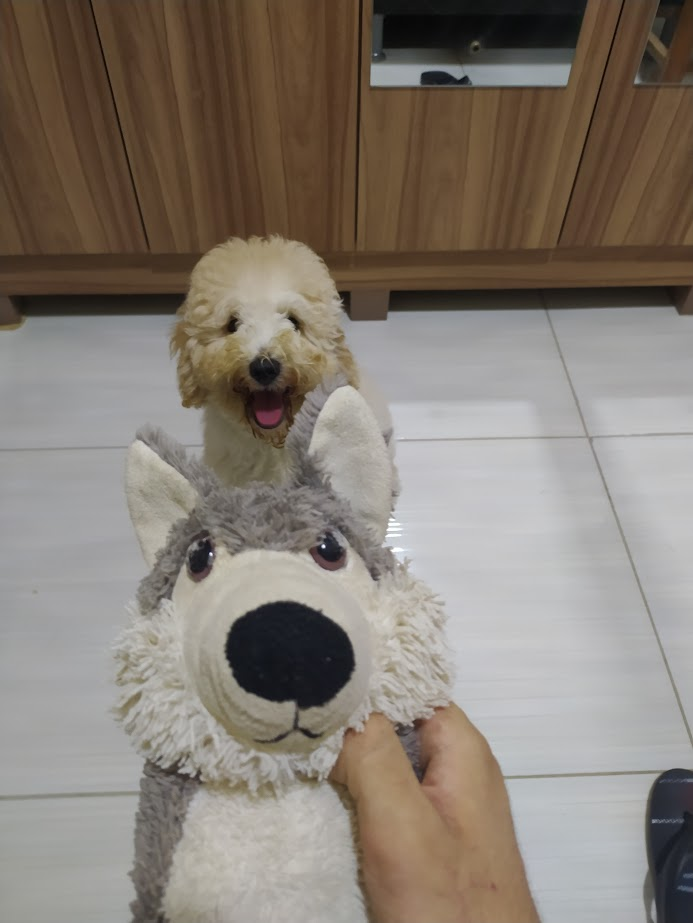

Phantasma é descuidado. Ele tirou uma foto do local do seu próximo ataque, mas esqueceu de limpar os 'rastros digitais' que a câmera deixou no arquivo.
Toda foto digital pode carregar informações ocultas: a câmera usada, a hora, a data e às vezes até ONDE ela foi tirada! São os chamados Metadados EXIF. Nós compartilhamos isso sem nem saber.
Sua missão: baixe a imagem, investigue suas propriedades (detalhes) e descubra a data exata em que ela foi tirada. Essa data é a sua flag.
